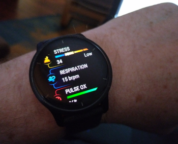
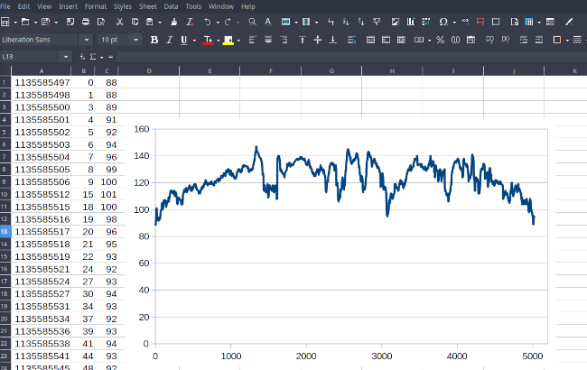

Using a Garmin fitness watch completely offline – no accounts, no app

If you’re concerned about online privacy, you may have reservations about using fitness-tracking smart watches, because of their reliance on corporate servers and data storage. You might wonder whether it’s possible to use such devices productively in a completely offline manner – with no companion smartphone app, and no data stored outside of your personal control. After all, data about our health – our sleep patterns, weight, heart rate, and so on – is among the most sensitive we have; sharing it merits a degree of caution.
Google’s purchase of FitBit in 2021 caused some discontent, leaving many FitBit owners worried that masses of personal data would fall into the hands of one of the least trusted tech companies in the industry. In the end, they probably needn’t have worried: we now know that Google bought FitBit not to get access to individual health data, but simply to kill a competitor. However, companies continue to acquire one another, and even a vendor that seems  broadly trustworthy at present, could end up in the hands of less scrupulous executives. And, of course, there’s the ever-present risk of data breaches, which corporations seem powerless to defend themselves against.
The answer to the question whether a smart watch is useful to a de-Googler depends on the level of functionality you need, and the vendor of the watch. I’ve generally bought Garmin watches because they can, to a limited extent, be used productively in a completely offline manner (once initially configured). I’ve been using my Venu 3 offline for over a year, and I used a Vivoactive 3 before that. Although offline use is not very convenient, both these watches satisfy my limited needs perfectly well this way. I imagine that most Garmin watches will also be satisfactory.
Note
I use my Garmin watch to time and examine my exercise sessions, particularly for heart rate, and sometimes to record my run/walk/bike routes using GPS. I’m also interested in the all-day heart rate and respiration metrics, because of specific health concerns I have. I don’t use any of the social media features, I don’t play golf, I don’t create personalized work-out plans (whatever they are), or ask for training insights (whatever they are).
I also don’t mind fiddling about with scripts and command-line tools to get the data I want. I imagine that many people will not be so fortunate. Even if you’re a geek like me, offline use might not be productive and, if you’re not, it almost certainly won’t be.
How Garmin watches work
Garmin’s watches are part of a complex infrastructure, involving the Garmin web service and website, the Garmin Connect smartphone app, and perhaps the Garmin Express desktop application.
The watches themselves have limited data storage. With my level of use, I find that my watch stores about six months of fitness activity data, and about two months of all-day metrics. After that, it starts erasing the earliest records. In normal use, the watch will be in near-constant contact with the companion smartphone app, which will collect fitness data and send it off to Garmin’s servers.
Something I suspect most users don’t realize is that the mobile and desktop apps are just interfaces to Garmin’s servers. They don’t store or manage any data themselves. So far as I know, you can’t opt to have the Connect app store your data locally on your smartphone, which would remove at least some of the privacy concerns.
The watch itself stores data in a format that Garmin calls “Flexible and Interoperable Data Transfer” (FIT) which is documented. You can get the raw FIT files by connecting the watch to a computer using a USB cable. Older watches appear as USB drives, but newer ones use the MTP protocol. Since the kind of software you’ll need to process the FIT files almost certainly won’t talk MTP, you’ll probably need to use a file manager to copy them into local storage. You’d probably want to do that anyway, so you can back them up, as you won’t be relying on Garmin for that.
It is to Garmin’s credit that they document the FIT file format, although it’s fabulously complex. I’ll have more to say about the FIT data files later, since these are what you’ll have to manipulate, if you want to analyse fitness data offline.
Would you want to use a Garmin watch offline?
The Garmin Connect platform offers a huge range of features, including some that require extensive data analysis. It caters for many different exercise and activity types, including relatively niche ones like wheelchair sports. I fully understand why people like to use it. I liked it myself, before I began my Google-free life, and lost the ability to run the Connect app.
Moreover, Garmin has a robust privacy policy, and I’ve seen no evidence of data breaches that exposed customers’ data without the Company’s knowledge. Of the various businesses that handle health and fitness data, Garmin appears to be one of the most trustworthy.
Unfortunately, there’s nothing stopping Garmin changing its policy in the future, nor preventing the whole Company being purchased by another business with less respect for privacy. After all, that’s what happened to FitBit.
On the other hand, there’s nothing to stop you registering a burner account on Garmin Connect with a throw-away email address and the absolute minimum of personal data. I wouldn’t do that with any service that had any association with Google, because Google’s tracking is so invasive, but it’s probably safe (for now) with Garmin. I’ve not heard of Garmin de-anonymising personal data and selling it. Whether that might happen in future, of course, is uncertain.
It seems to me that there are two classes of Garmin smartwatch user who might want to operate completely offline:
- those who distrust all large technology corporations, and
- those who don’t have a smartphone, or lack a way to to run the Garmin Connect app.
I would put myself in both these categories, at least as far as health data is concerned. Information about my health and fitness is something I consider highly sensitive, meriting stronger precautions than, for example, my shopping habits. Also, since I use a de-Googled phone, I don’t have access to the Google Play store, so I can’t run the Garmin app.
I have to state from the outset that using a Garmin fitness watch outside Garmin Connect infrastructure is limiting and problematic.
- Probably 90% of the functionality of the platform is provided by the Connect website, even if you use the app or the Garmin Express desktop application. Only you can determine whether the remaining 10% is the functionality you actually need.
- It’s possible to extract all the fitness data and metrics from the watch using only a computer and a USB cable. However, converting and analysing that data is a challenge, and one you’ll get little help with. You could upload your FIT data to other platforms like Strava, but that’s not going to increase the security of your information, and defeats the purpose of working offline.
- You’ll almost certainly need to use the Garmin Connect app at least once to do the initial set-up – at least with certain watches.
Initial set-up
When I bought my Venu 3, the only things it could do out-of-the-box were to display the time and count steps. I suspect the features that are available without online initialization vary from one watch model to another.
The built-in user interface does provide ways to enter all the same information that the Connect app asks for: height, age, weight, sex, and so on. And yet, even after entering this information, I could not get the watch to record or display even heart rate, which I would have expected to need little extra configuration.
In the end, I used the Garmin Connect app (on somebody else’s smartphone, since my de-Googled phone has no access to the Google Play store), and created a burner Connect account. Once I’d done the initial set-up, I deleted the account and the app. I’m not entirely happy that I had to do even this much online and, even more irritating, I’m not sure whether I really had to. Maybe there was just some simple local set-up that I overlooked, and could have done manually – I really don’t know.
It’s probably worth upgrading the watch’s firmware during this initial set-up, as you might not be able to do it later if you’re not using the Garmin Connect app – more on this later.
Now I have the watch working fine, I’m reluctant to reset it and try to find out what (if anything) I did wrong. I didn’t provide Garmin with enough information to identify me, even at a probabilistic level, so I’m not too worried; but I would have preferred to use the watch without any online set-up at all.
Having done the initial set-up, I’ve not had any further problems managing the watch using only it’s built-in user interface. I don’t enable Bluetooth or wi-fi, because without Garmin’s infrastructure they do nothing useful, unfortunately. On the positive side, managing without Bluetooth and wi-fi probably gives a modest improvement in battery life.
What can the watch do offline easily?
It’s worth asking what a Garmin smart watch can do offline, that doesn’t involve a lot of technical fiddling.
Once it’s set up, the watch will record heart rate data, ‘stress’, estimates of Calorie consumption, sleep quality, and so on, and present data for the current day on its built-in screen. What data you see depends on the specific watch face you’ve selected, and how it’s configured.
Once you complete an exercise activity – which can be started and stopped using the mechanical switches on the watch – you’ll be able to see a summary of the session, including a graph of heart rate.
Some watches, including the Venu, allow you to review previous exercise sessions on the screen. So far as I know, there’s no way to see historical records related to all-day metrics like heart rate and respiration, nor to look at sleep patterns, on the watch itself. Although the history feature is useful, it’s not as useful as Garmin’s website or app, because it’s fiddly to find a specific activity using only the watch’s menu. It’s also important to bear in mind that the watch only has limited storage for exercise records.
If you pair the watch with Bluetooth headphones, you’ll be able to use the built-in audio player to play MP3 files, which you can copy directly to the watch’s storage from a computer.
The rudimentary navigation features on the Venu work fine offline, once the watch has locked onto GPS satellites. That is, you can save locations, and navigate with a pointer to a selected location. Whether the more sophisticated navigation features of the more expensive watches – the ones that support maps – work offline, I don’t know.
You’ll be able to install a few 3rd-party applications and watch
faces without using Garmin Connect. Specifically, you can install
software that the developer has provided in Garmin’s “PRG” format, like
my own battery-saving watch faces MOWF and BAWF. These just need to
be dropped into the GARMIN/APPS directory using a USB
connection. Of course, most developers don’t provide their
applications that way, although I’ve found that some are willing to do
so, if you ask them nicely.
Looking at FIT files
Note
I’m a Linux user. The Garmin software tools I reference work fine on Windows and Mac, but I can’t comment on how to use them. I use Linux command-line tools and LibreOffice to process and view the data and, again, while there are undoubtedly ways to do the same kind of thing on Windows and Mac computers, please don’t ask me how, as I have no clue.
Finding and converting the files
Although the FIT format is documented, I’ve found no documentation about how or where the files are stored on the watch. Although I’ve noticed commonality between models, I can’t be sure all are the same. Because the folder names are somewhat opaque, it takes a certain amount of head-scratching to find the data you want. You’ll probably need to scratch your head a lot more to make sense of the data, once you’ve found it.
The FIT files for specific activities are stored in the folder
GARMIN/Activity, named with the start time of the
exercise.
FIT files for all-day metrics like heart rate and respiration are
stored in the GARMIN/Monitor folder. Although each day
starts with a new file at midnight, you can’t rely on there being a
single file for each day, which is a nuisance. In particular, if you
take off the watch (to charge it, for example), it will start a new file
when it begins recording again. You’ll need to rely on the specific
timestamps in each record within the file, if you want to assemble the
metrics for a whole day. You’ll also have to deal with the fact that
there could be periods in a day, of any length, where there’s no data at
all.
You’ll therefore need to know how FIT stores timestamps. FIT times are the number of seconds since (for some reason) midnight UTC on Dec 31, 1989.
Here is a simple Linux shell script that converts FIT timestamps to human-readable local times.
#!/bin/bash
# fitdate.sh
FD=$1
date -d @`expr $(($FD + 631065600))`Run it like this:
$ fitdate.sh 1135585498
Thu 25 Dec 08:24:58 GMT 2025As might be expected, working directly on raw, binary FIT files is a PITA.
If you do a web search, you’ll find plenty of tools for converting
FIT files into other formats. I prefer to use Garmin’s own
FitCSVTool, which is part of the Garmin FIT Software
Development Kit. If you don’t need any other part of the SDK (it’s
mostly sample code), you can just extract FitCSVTool.jar
and store it in any convenient location. Yes, this is a Java program, so
it should work on most computers. To convert the FIT file into a
text-based CSV file, run the utility like this (on Linux):
$ java -jar /path/to/FITCSVTool.jar -b input_file.fit output_file.csv All FITCSVTool does is to convert the incomprehensible,
binary FIT file into a barely-comprehensible CSV file. A spreadsheet
like LibreOffice will read this CSV file perfectly well, but in its raw
form it’s unlikely to be useful. You’ll need to filter out the records
that apply to the metric of interest, like heart rate. There’s a lot of
data in a converted FIT file that won’t be useful in a specific
application, and lot that is just reported as unknown, for
some reason.
I suppose you could use a spreadsheet’s data filtering tools to exact the records of interest, but I prefer to do this using command-line tools or scripts. Still, it’s helpful to view the converted FIT file in a spreadsheet in its unfiltered form, just to get a feel for the records that are available, and how they are labelled.
Looking at Activity data
After serious training – increasingly rare at my age – I like to look at my heart rate data, and check that I’ve met my targets for specific heart rate zones. I usually haven’t, but I live in hope.
To do this offline I need to extract the relevant FIT file for the exercise activity (as described above), and turn it into something I can look at in a spreadsheet, or with software of my own.
Since I’m interested in heart rate, I filter out heart rate records from the converted activity FIT file like this:
$ grep ,heart_rate converted_fit_file.csv |cut -d , -f 5,11 > filtered_fit_file.csv This works because, when recording activities, the watch stores the timestamp and the heart rate in the same row, in positions 5 and 11 respectively. So this filter operation gives me a CSV file with only two columns: timestamp and heart rate. I can load these directly into LibreOffice, and plot them as an XY chart.
Here’s what this data looks like in LibreOffice.

In practice, I’ll use the spreadsheet to convert the timestamp column from FIT’s internal format to the number of minutes since the start of the exercise, because I usually don’t care about the actual time of day when I’m looking at a particular exercise.
If you just want to read a summary of the activity – type, time,
distance, etc., – a useful row in the converted CSV file is the
session record. This single record contains a whole bunch
of useful summary metrics. Unfortunately, it’s too fiddly to extract and
format this using a simple shell script, so I use a Perl script. It’s
too long and boring to include in this article – here is the source code.
There’s a lot of information in an activity FIT file but, annoyingly, it tends to be different for each activity type. I’m not interested in my average swimming stroke length, for example, but it’s there – at least in a swimming record. There’s really no better way to find out what’s in a particular kind of FIT file, except to convert a few and look at them.
Looking at routes
If you’re more interested in recording the route you followed, rather
than fitness metrics like heart rate, you can extract location data
instead. In the file converted by FITCSVTool the GPS
location is stored in specific records in the CSV file. You could use a
similar technique to the one I described to extract the heart rate, to
extract the GPS location instead, and build a GPX file. The GPX format
is XML-based, and reasonably straightforward to write in software.
Happily, there’s no need to do any of this, because
gpsbabel supports Garmin FIT files directly.
$ gpsbabel -rt -i garmin_fit -f activity_file.fit -x track,course,speed -o gpx -F output_file.gpx Note that the input file here is raw FIT file, directly from the
watch, not a CSV file from FITCSVTool.
Looking at all-day metrics
As I explained above, these files are more complicated, because there can be more than one per day. The additional complication is that time of day is not stored in the same row as heart rate, etc., as was the case for activity data.
I’ve not found a way to handle these metrics files other than with software of my own, which examines each row and works out which heart rate (or whatever) goes with which timestamp. Here is the Perl program I use to do this extraction for heart rate data.
#!/usr/bin/perl -w
# Extract timestamp and heart rate from a FIT file where
# the timestamp and heart rate are on different records.
# Usage: perl filter_fit.pl < input > output
# You might need to adjust the way the timestamp is printed,
# particularly if a specific day is split into multiple files.
use strict;
sub toepoch ($)
{
# Garmin epoch is 00:00 UTC Dec 31 1989, or 631065600
return $_[0] + 631065600;
}
sub todate ($)
{
my $epoch_date = toepoch ($_[0]);
return localtime ($epoch_date);
}
my $last_timestamp = 0;
my $first_timestamp = 0;
while (<>)
{
if (/Data/)
{
if (/timestamp,/)
{
my @args = split (",", $_);
my $timestamp = eval ($args[4]); # remove quotes
if ($timestamp > $last_timestamp) { $last_timestamp = $timestamp; }
if ($first_timestamp == 0) { $first_timestamp = $timestamp; }
}
if (/heart_rate,/)
{
my @args = split (",", $_);
my $hr = eval ($args[7]); # remove quotes
if ($hr > 0)
{
# Print epoch time in the first column
my $ts = toepoch ($last_timestamp);
print $ts;
# Alternatively, print the time from the first record in the file
#print ",";
#print (($last_timestamp - $first_timestamp) / 3600);
# Alternatively, print the date in human-readable format
#print ",";
#print todate ($last_timestamp);
print ",";
print $hr;
print "\n";
}
}
}
}If you want to assemble multiple converted FIT files into a single spreadsheet, it’s probably best to have the Perl program output the time in a monotonic format, that does not depend on the specific file. I use the Unix epoch time for this. If I concatenate a bunch of converted files into a single, large CSV file, then LibreOffice will be able to make an XY chart using the epoch time as the X coordinate. Unfortunately, LibreOffice isn’t flexible enough to display the actual, human-readable times on the X axis – a feature that has been requested often, but never implemented. Still, if you assemble a complete day’s data, it’s not difficult to guess what the actual times are, and you can always have the Perl script output the human-readable time as well as the Unix epoch time, if you want to look more closely.
Of course, there are undoubtedly many ways to process this metric data, rather than using Perl – but it does require a careful scrutiny of the converted FIT files, and probably a measure of trial-and-error. And, of course, some skill with programming or scripting, that fully understand that not everybody has.
Oddities
The things I mention in this section are not (for me) show-stoppers, but they are problems that I wouldn’t have, if I used the Garmin Connect app, rather than stubbornly refusing to expose my private data to the Internet.
GPS locking
A Garmin fitness watch will receive coarse GPS satellite location data from Garmin’s web service, if it can communicate with the Connect app. It will use that data to prime the GPS lock. Without the app, obtaining a satellite lock Vwill take longer – perhaps minutes.
Once the watch has a lock, it will be able to re-lock much more quickly next time, so long as it isn’t too long since it last used GPS. If you only enable GPS occasionally, the long delay can be a nuisance. Still, I’ve not had to wait more than a minute or two for GPS to start working, even after not using it for months.
I’ve heard reports that the GPS accuracy is better if the watch can communicate with the app. Perhaps that’s true for some watches, but it’s not a problem I’ve noticed with mine.
Time sync
The watch will synchronize its time with the Connect app which will, presumably, get its time from some reliable source. Without the app, I’ve found that on my watch the time drifts by some tens of seconds a month.
If you have GPS enabled, you can force the watch to synchronise its time from GPS – this is a manual operation, controlled by a function in the Settings menu. If all else fails, you can set the time manually from the watch’s user interface.
SMS messages and other Bluetooth features
The Garmin watches will go through the motions of pairing with a cellphone using Bluetooth but, so far as I know, this accomplishes nothing without the Connect app. In fact, Garmin’s instructions stipulate not to use the phone’s Bluetooth pairing at all all.
It’s somewhat irritating that the Garmin watches won’t display SMS messages from a smartphone without the Connect app, even though the basic Bluetooth protocol does allow for this. After all, my car stereo can display text messages from my phone, and that certainly doesn’t need an app on the handset. Similarly, the watch’s media playback controls won’t control a smartphone even though, again, this facility is part of the basic Bluetooth protocol.
I don’t regard these as a serious problems because, if my watch is within range of my smartphone, in most cases my eyes and hands are, too. But it would be helpful, from time to time, to keep my phone in my backpack, and see incoming messages or switch audio tracks without digging it out.
It’s frankly bizarre that my year-old Garmin watch lacks Bluetooth functionality that my ten-year-old car radio has.
Firwmare updates
It’s fiddly to update the watch’s firmware without using either the
Garmin Connect app or the Garmin Express desktop application, and having
a Garmin account. In principle, the manual process is to obtain the
latest firmware in the form of a GUPDATE.GCD file, put it
in the watch’s /GARMIN directory, and then let the watch
find and install it.
In practice, it’s no longer easy to get GUPDATE.GCD
files, at least for recent watches. Garmin Support will sometimes make
them available for a particular watch, if you ask them nicely but, so
far as I know, there is no general archive for these.
In principle, recent Garmin watches will download updates directly over wi-fi, but on most models you can only set up a wi-fi connection using – you guessed it – the Garmin Connect app. If you’re using the Connect app for initial set-up – and it’s difficult not to – you could configure a wi-fi connection at this point. Then you could switch wi-fi on only when you want to do a firmware update. Whether it’s possible to prevent the watch sending a load of personal data to Garmin at the same time, I really don’t know.
Since my Venu appears to work fine, for the functionality I need, I don’t really miss being unable to update it. Moreover, it isn’t unheard of for Garmin to roll out updates that break their watches completely: this time last year they issued a GPS data update that put every watch that updated out of service for a week.
So perhaps being unable to update easily has a positive side?
Closing remarks
I started this article with the intention of saying how easy it is to use a Garmin fitness watch offline. As I began to write it, however, I increasingly realized that it’s only remotely ‘easy’ if you’re a computer geek with no social life, like me. Normal people probably don’t have time for any of this.